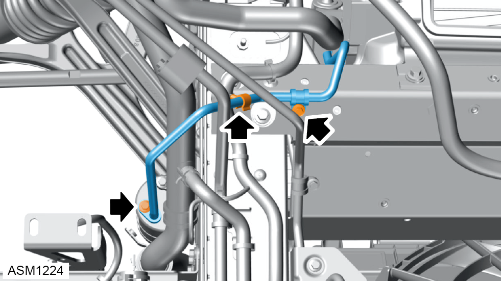
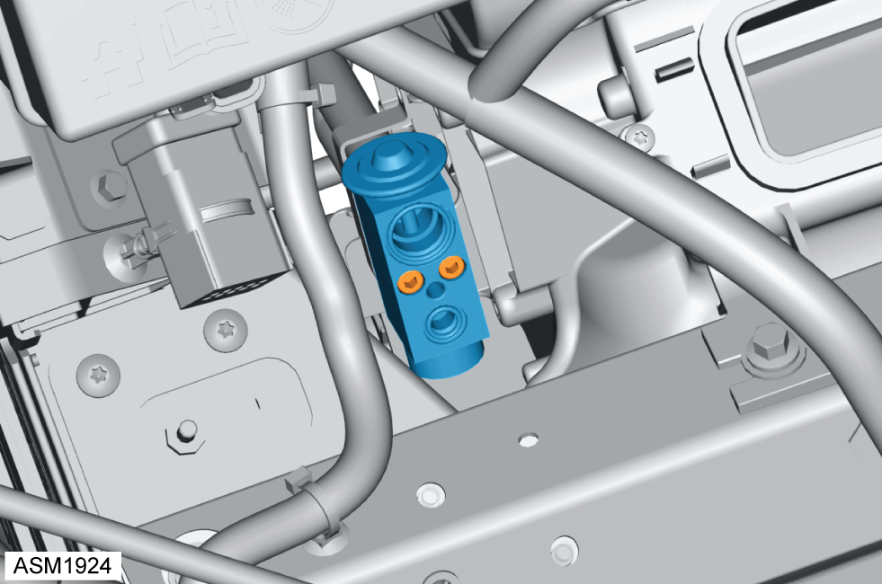

Expansion Valve
Print
Operation Code: 18.01.05-02
Removal
- Depressurise air conditioning system. Refer to procedure.
- Remove pollen filter. Refer to procedure.
- Remove M6x16 bolt securing air conditioning pipe clamp plate to expansion valve. Torque 9 Nm.
- Remove air conditioning clamp plate.
- Remove M6x20 bolt from air conditioning pipe. Torque 10 Nm.
- Disconnect air conditioning pipe from fitting.
NOTE: Cap pipe and fitting to prevent ingress of dirt and moisture.
- Disconnect air conditioning pipe from expansion valve.
NOTE: Cap pipe and expansion valve port to prevent ingress of dirt and moisture.

- Remove M6x20 bolts (x2) securing air conditioning pipe to receiver dryer and front subframe. Torque 10 Nm.
- Release clip from air conditioning pipe.
- Disconnect air conditioning pipe from receiver dryer.
NOTE: Cap pipe and receiver dryer port to prevent ingress of dirt and moisture.
- Disconnect air conditioning pipe from expansion valve.
NOTE: Cap pipe and expansion valve port to prevent ingress of dirt and moisture.

- Remove allen bolts (x2) securing expansion valve to evaporator pipes. Torque 9 Nm.
- Remove expansion valve.
NOTE: Cap pipes and expansion valve ports to prevent ingress of dirt and moisture.
Installation
- Installation is the reverse of removal procedure except for the following:
- Renew discarded O rings.
- With AC compressor fitted, perform the following running in procedure:
 WARNING: The running in procedure described below must be performed so that refrigerant oil does not exit the compressor sump and flow directly into the air conditioning hoses/pipes before first circulating around the compressor, this ensures the compressors internal components are fully lubricated.
WARNING: The running in procedure described below must be performed so that refrigerant oil does not exit the compressor sump and flow directly into the air conditioning hoses/pipes before first circulating around the compressor, this ensures the compressors internal components are fully lubricated.
- Start engine.
- Turn on air conditioning to maximum cold setting.
- Allow engine to idle for 2 minutes while monitoring performance.
- Check for any leaks of AC refrigerant or oil.